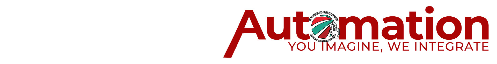
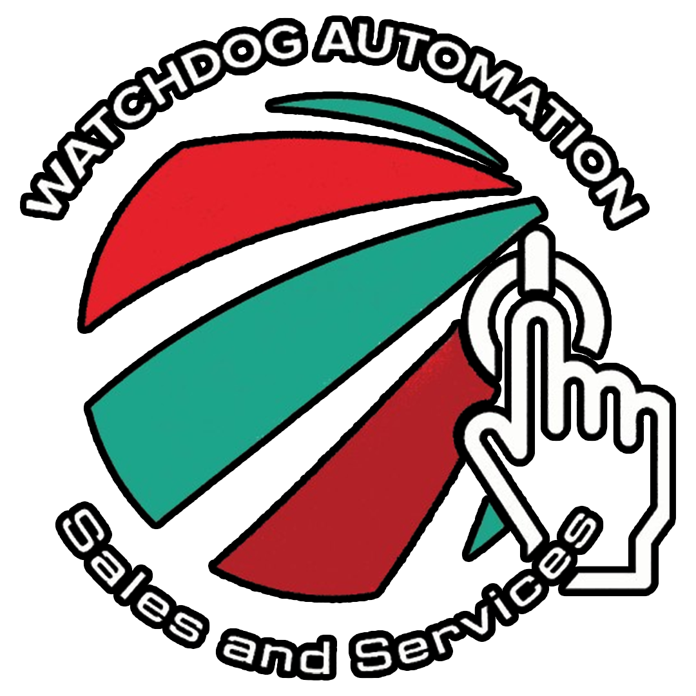
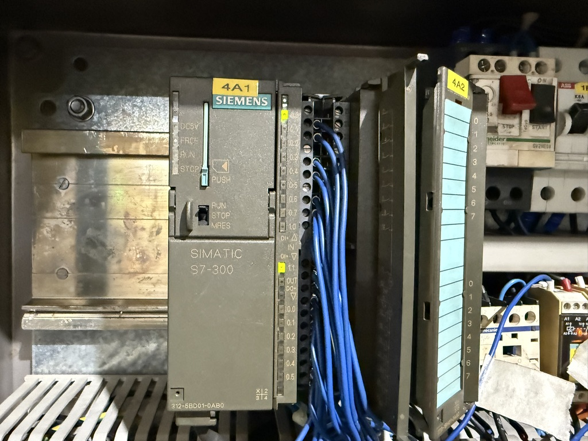

Case Study
Pump Station Control Upgrade
Refactored sequencing and alarms, reduced nuisance trips, improved operator clarity.
Scope: PLC logic + HMI screens + commissioning support


Engineering Precision in Industrial Automation
Real-world automation projects delivered across power, manufacturing, and industrial facilities.

Water desalination machines are built by engineers to remove salt, minerals, and impurities from seawater or brackish water to create potable (drinking) water and water suitable for industrial, agricultural, or municipal use. These systems are essential for securing water supplies in arid, coastal, or remote areas facing water scarcity.

This project involved upgrading the existing control system from the Siemens SIMATIC S7-300 PLC to the newer Siemens SIMATIC S7-1500 PLC platform. The work included migrating the PLC program, reconfiguring hardware, and ensuring proper system communication. The upgrade improved system performance, diagnostics capability, and long-term reliability of the DEPAL automation system.

This project involved upgrading the plant's automation system by migrating from the legacy Siemens S7-300 PLC platform to the more modern S7-1500 series. The work included converting existing PLC programs, updating hardware configuration, and ensuring compatibility with the plant's field devices and control network. The upgrade enhanced system performance, diagnostics, and long-term maintainability while supporting more reliable and efficient plant operations.
4–20 mA, RTD, thermocouple, relays, and marshalling—planned for commissioning.
Fast root-cause analysis without "random parameter changes." Evidence-driven fixes.
Test scripts, punchlists, and turnover packages so operations isn't guessing.


Replace these placeholders with real case studies when you're ready (even without revealing confidential details).
Refactored sequencing and alarms, reduced nuisance trips, improved operator clarity.
Validated permissives/trips and created a cause & effect matrix for operations.
Implemented structured naming, reduced duplicate tags, improved long-term maintainability.
Predictable delivery beats "debugging in production." We favor clear scope, testable outputs, and clean handover.
Review I/O, drawings, network, constraints, and acceptance criteria.
Cause & effect, alarm philosophy, screen list, test plan.
Implementation with version control and internal reviews.
FAT/SAT support, punchlist closure, turnover package.
Send a brief description, your location, and any relevant drawings/I/O list. We'll reply with clarifying questions and next steps.
No backend here yet—use email for now. We can add a form service later.